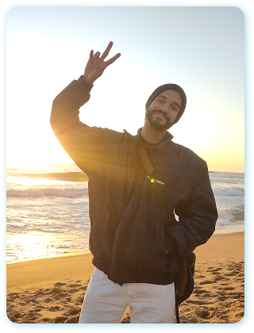
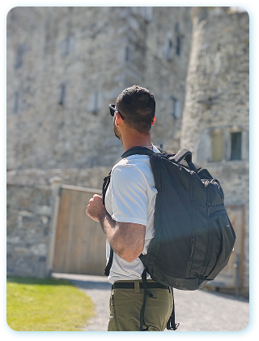
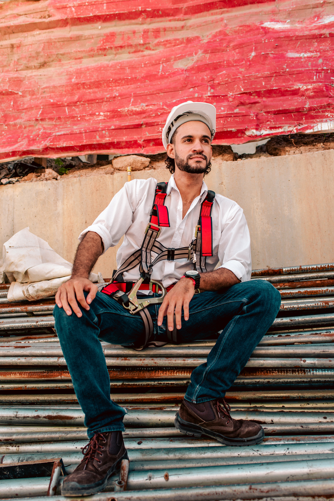

Formatura na UFS
Primeiro da família a terminar faculdade.
Engenharia vista de dentro do canteiro
Não porque eu era especial. Porque descobri, tarde, o que a faculdade não conta. É isso que eu documento aqui.
Curadoria manual. Eu não sou recrutador e não intermedeio nada — cada vaga leva direto pra fonte original. Atualizo toda segunda.
Rev. 12 · 04.08.2026 · 9 vagas abertas
Nenhuma vaga com esse filtro nesta revisão. Eu atualizo toda segunda — ou me chama no direct que eu procuro.
Formatura na UFS
Primeiro da família a terminar faculdade.
42 School, São Paulo
Cortava o próprio cabelo porque R$10 fazia falta.
R$600 / mêsComeça a filmar tudo
Sem saber por quê.
230 vlogsChevening negada
Um ano e meio de tentativa. Fase final. Não passou.
18 mesesChile
Primeira vez fora do Brasil. Sozinho, a trabalho.

LinkedIn estruturado
Fui caçado sem ter me candidatado.
Irlanda
Entrevistas em inglês.
4 rodadas
Kalundborg
Obra farmacêutica. Lean e BIM.
55.68°N
Dia X: o diário
Os 230 vlogs de 2021 em diante, editados em ordem. Sem dramatização: é o arquivo cru.
Sem Filtro
Uma tese por semana sobre o mercado, dita sem amaciar.
Por dentro da obra
BIM, Lean, IA aplicada em obra de verdade, com o problema real na frente da ferramenta.
As Engenharias em… / The Container
Porque canteiro é engraçado e ninguém filma isso.

Sobre
Eu não tenho fórmula. Tenho um caminho específico que deu certo pra mim, com uns dez tropeços no meio que eu filmei sem querer. A parte útil não é o resultado — é o mecanismo. O que eu descobri e quando, e o que eu teria feito diferente.
Trabalho hoje com Lean Construction e BIM numa obra farmacêutica na Dinamarca. Antes disso eu não sabia o que era nenhuma das duas coisas, e ninguém na faculdade tinha me falado delas.